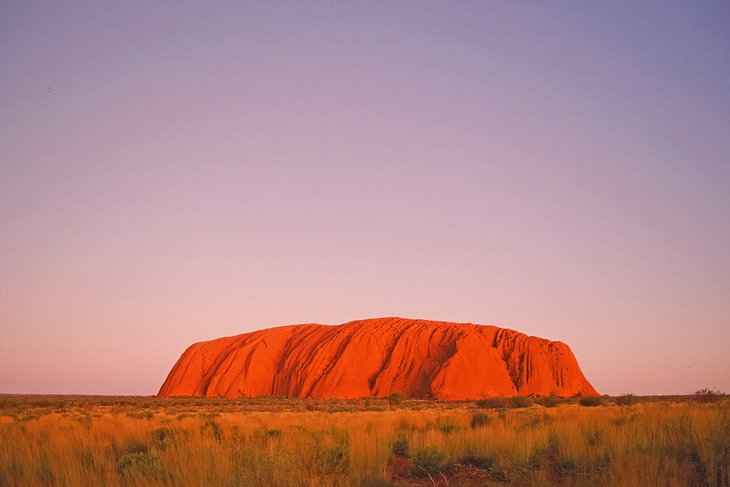
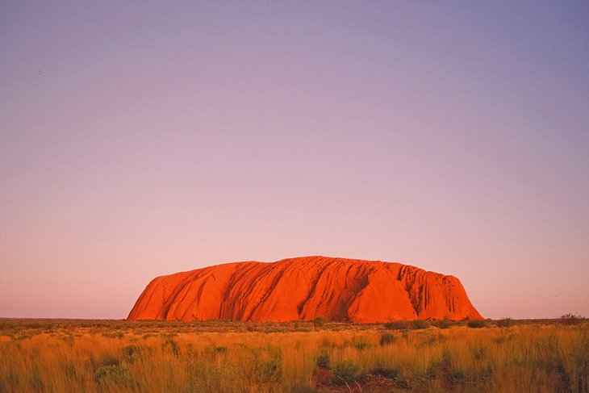

USA Travel Guide
New Zealand
Language: English (de facto)
Currency: New Zealand Dollar
Attractions: Fiorland National Park, Great Barrier Reef Marine Park, and Sydney Opera House
Visa Required: No
Getting There:
Overview: Australia is a land of dreams. From the sacred legends of the Aboriginal Dreamtime, when the great spirits conjured the coral reefs, rainforests, and red deserts, to armchair travelers who describe Australia as their dream destination, the Land Down Under deserves all the hype. The world's smallest continent and largest island, Australia is almost the same size as the United States but with a population the size of New York State and some of the quirkiest wildlife on the planet. Australia is also a land of staggering contrasts and spectacular beauty. Along the coast, you can explore vibrant cities, vast sand islands, ancient rainforests, and one of the planet's most awe-inspiring natural wonders: the Great Barrier Reef. In the Outback, rugged national parks and red-earthed deserts offer the ultimate in adventure travel. Top it all off with a laid-back feel and friendly people, and it's no wonder Australia scores top billing on bucket lists around the world. Create your own adventures with our list of the top attractions in Australia.

 
